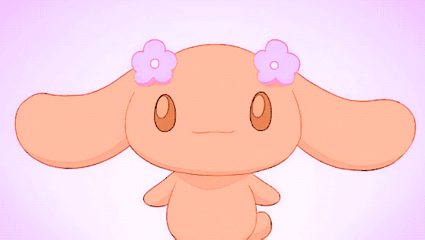
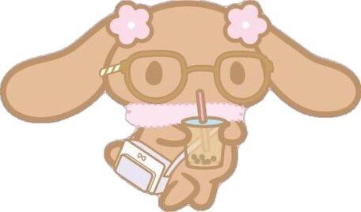
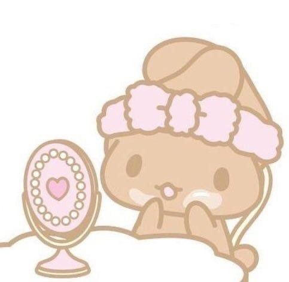

Mocha is one of my FAVORITE Sanrio characters!
Mocha (モカ Moka) is a Sanrio character and a member of the Cinnamoroll universe. She's the leader of the idol group, Cinnamoangels, working alongside Chiffon and Azuki.
Mocha is a kind and caring friend to Cinnamoroll and an older sister figure to their other friends. She's very talkative and enjoys chatting with the owner and customers at Cinnamon Cafe, but more than that, she really loves fashion. She's a skilled outfit coordinator and dreams of hosting a fashion show of her own. She also dreams of becoming a bride. Her favorite foods are chocolate gateau and fruit tarts. Her birthday is February 20.
Since we're here, let's all just admire how gorgeous she is!
Photo taken from source
Photo taken from source
Photo taken from source
Want to learn more about me? Go to the About Me page.